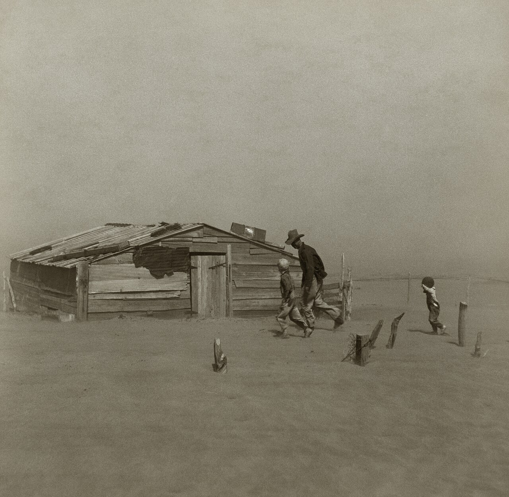

人类活动对生态环境的影响
本期导读
生态足迹 · 全球性生态环境问题

视频原话 · 导读3 句
- 同学们好！这节课梳理人教版选择性必修二第四章第一节——人类活动对生态环境的影响。9.0s
- 高考常考生态足迹的含义与影响因素，以及全球性生态环境问题的成因和对策。7.7s
- 我们按六个考点梳理，每个考点都讲清楚怎么考、怎么做。5.5s
生态足迹的概念01#
生态足迹（生态占用）：现有技术条件下，维持某一人口单位生存所需的生产资源和吸纳废物的土地及水域的面积
人口单位：一个人、一座城市、一个国家，乃至全人类
值越大 → 所需资源越多 → 对生态环境影响越大
易错
包括两部分：生产资源的面积 + 吸纳废物的面积（如吸收 CO2 的森林）
视频原话4 句
- 考点一，生态足迹的概念。生态足迹，又叫生态占用，是指在现有技术条件下，维持某一人口单位生存所需的生产资源和吸纳废物的土地及水域的面积。14.9s
- “某一人口单位”可以是一个人、一个城市、一个国家，甚至全人类。6.0s
- 生态足迹的值越大，代表人类所需的资源越多，对生态和环境的影响就越大。7.3s
- 易错：生态足迹包括两部分：生产资源所需的面积，以及吸纳废物所需的面积，比如吸收CO2所需的森林面积。只答一半是常见失分点。13.9s
生态足迹的影响因素02#
生态足迹与生活方式密切相关
步行＜开车汽车消耗资源，还需吸收尾气中的 CO2
多吃素＜多吃肉食物链越长，散失的能量越多，需要的耕地草场越多
考法
减小生态足迹：低碳出行、节约水电、减少浪费、适当多吃素食；人口增长使总生态足迹增大
视频原话4 句
- 考点二，生态足迹的影响因素。生态足迹的大小，与人的生活方式密切相关。8.0s
- 比如，与步行相比，开车出行会增大生态足迹，因为汽车要消耗资源，还要吸收尾气中的CO2。9.9s
- 又比如，多吃肉会比多吃蔬菜增大生态足迹，因为食物链越长，能量流动中散失的能量越多，需要的耕地和草场也越多。11.7s
- 考法：问怎样减小生态足迹。答：低碳出行、节约用水用电、减少浪费、适当多吃素食等。人口增长也会使总的生态足迹增大。13.5s
全球气候变化03#
原因
化石燃料大量燃烧、植被破坏 → 大气中 CO2 等温室气体增多
→
危害
全球变暖：冰川融化、海平面上升，极端天气增多，影响农业和生物分布
→
对策
减少化石燃料燃烧，开发清洁能源；植树造林，增加 CO2 吸收
视频原话3 句
- 考点三，全球气候变化。成因：化石燃料的大量燃烧，以及植被破坏，使大气中CO2等温室气体增多。10.9s
- 后果：全球气候变暖，冰川融化、海平面上升，极端天气增多，影响农业生产和生物分布。9.2s
- 对策：减少化石燃料燃烧，开发清洁能源；大力植树造林，增加对CO2的吸收。8.7s
臭氧层破坏与酸雨04#
臭氧层：吸收太阳光中的紫外线，保护地球生物
臭氧层破坏
原因：氟氯烃等物质
危害：紫外线增多，皮肤癌、白内障发病率升高
酸雨
原因：燃烧煤、石油释放的硫和氮的氧化物
危害：水体、土壤酸化，危害植物和水生生物
易错
元凶别混：温室效应——CO2；臭氧层破坏——氟氯烃；酸雨——硫和氮的氧化物
视频原话4 句
- 考点四，臭氧层破坏与酸雨。臭氧层能吸收太阳光中的紫外线，保护地球上的生物。8.6s
- 臭氧层破坏的主要原因是人类使用的氟氯烃等物质。臭氧层变薄，到达地面的紫外线增多，会使人类皮肤癌、白内障的发病率升高。12.2s
- 酸雨主要由燃烧煤、石油等释放的硫和氮的氧化物引起，会使水体和土壤酸化，危害植物和水生生物。9.6s
- 易错：三大问题的“元凶”不要混：温室效应——CO2；臭氧层破坏——氟氯烃；酸雨——硫和氮的氧化物。10.3s
水资源与荒漠化05#
水资源短缺
原因：人口增长、用水增加，水体污染
危害：可利用的淡水越来越少
土地荒漠化
原因：过度放牧、过度开垦、滥伐森林
危害：土地退化，沙尘暴频发
其他问题
原因：栖息地破坏、过度利用、污染物排放
危害：生物多样性丧失；环境污染（如海洋塑料垃圾）
解题方法
按“原因 → 危害 → 对策”三步答；原因多指向不合理的人类活动
视频原话5 句
- 考点五，其他全球性生态环境问题。3.8s
- 水资源短缺：人口增长、用水量增加，加上水体污染，使可利用的淡水资源越来越少。8.7s
- 土地荒漠化：主要原因是过度放牧、过度开垦、滥伐森林等不合理的人类活动，图片中的美国大平原沙尘暴就是典型例子。11.5s
- 还有生物多样性丧失和环境污染，比如海洋中的塑料垃圾污染。6.1s
- 解题方法：答环境问题题目，按“原因 → 危害 → 对策”三步写，原因多数指向不合理的人类活动。8.7s
可持续发展06#
可持续发展：在不牺牲未来几代人需要的情况下，满足我们这代人的需要
自然
经济
社会
持久而协调地发展
思路：控制人口增长，转变生产和生活方式，减小生态足迹，提高资源利用率
易错
可持续发展不是禁止开发利用，而是合理利用，兼顾当代人和后代人
视频原话4 句
- 考点六，可持续发展。可持续发展是指在不牺牲未来几代人需要的情况下，满足我们这代人的需要。9.9s
- 它追求的是自然、经济、社会的持久而协调的发展。5.7s
- 解决环境问题的思路：控制人口增长，转变生产和生活方式，减小生态足迹，提高资源利用率，保护生态环境。10.8s
- 易错：可持续发展不是禁止开发利用自然资源，而是合理利用，兼顾当代人和后代人的需要。8.9s
易错速查✓
先自己判断，再点按钮查看对错与解析。
- 1生态足迹越大，对生态环境的影响越大说法正确。
- 2生态足迹的值与生活方式无关说法错误：生活方式不同，生态足迹不同
- 3全球变暖主要由CO2等温室气体增多引起说法正确。
- 4臭氧层破坏主要由CO2引起说法错误：主要由氟氯烃等物质引起
- 5酸雨主要由硫和氮的氧化物引起说法正确。
- 6可持续发展就是禁止开发利用自然资源说法错误：是合理利用，兼顾当代和后代
足迹越大压力越大，合理利用才能持续！
视频原话 · 易错速查5 句
- 最后，用六道判断题检验一下。3.6s
- 判断一：生态足迹越大，对生态环境的影响越大？对。判断二：生态足迹的值与生活方式无关？错。11.3s
- 判断三：全球变暖主要由CO2等温室气体增多引起？对。判断四：臭氧层破坏主要由CO2引起？错，主要由氟氯烃引起。14.2s
- 判断五：酸雨主要由硫和氮的氧化物引起？对。判断六：可持续发展就是禁止开发利用自然资源？错，是合理利用。12.5s
- 六个考点串成一条线：足迹越大压力越大，合理利用才能持续。我们下期再见！8.1s
图片来源
图片来源：Wikimedia Commons —— Arthur Rothstein《Farmer walking in dust storm, Cimarron County, Oklahoma》Public domain
Photo: Arthur Rothstein, Public domain